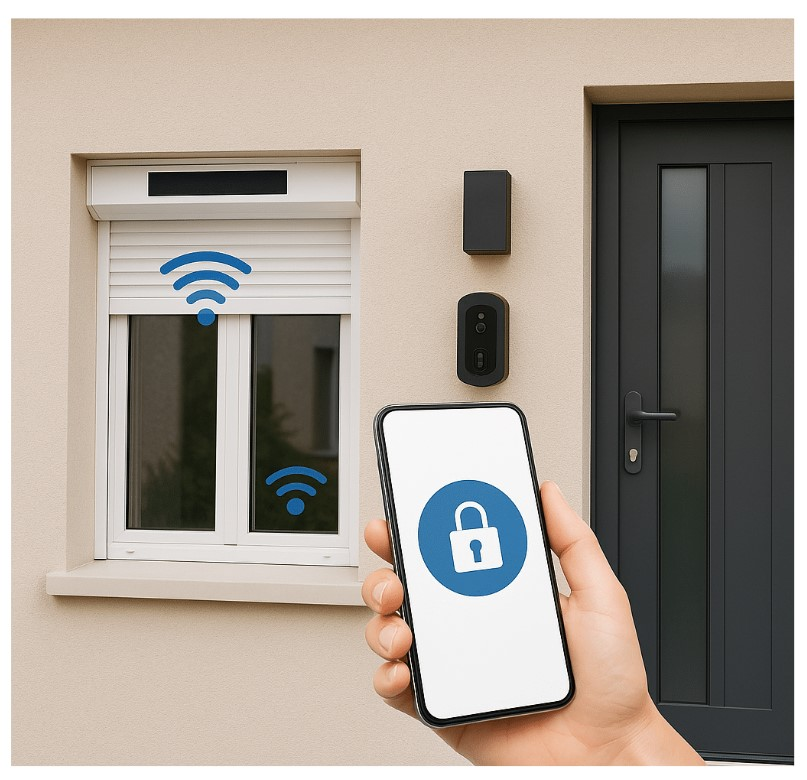

🌱
Durabilité
Réduire le gaspillage d’eau et d’énergie et mieux suivre les ressources.
Quels bénéfices attendre, et quelles précautions prendre pour une urbanisation intelligente ?
Réduire le gaspillage d’eau et d’énergie et mieux suivre les ressources.
Améliorer l’accès à l’information, la mobilité et les services publics.
Anticiper les risques urbains grâce aux données et aux alertes.
Faciliter le dialogue entre citoyens et collectivités.
Suivre des indicateurs pour mieux cibler les investissements.
Créer des occasions de formation et d’entrepreneuriat.
Coûts, couverture réseau, coupures d’électricité, cybersécurité et entretien des équipements.
Fracture numérique, accessibilité, protection de la vie privée et inclusion des quartiers périphériques.
Les solutions intelligentes doivent conjuguer économies d’énergie, sécurité, accessibilité et respect de la vie privée.

Une serrure et des ouvertures connectées peuvent être commandées à distance. Cette technologie illustre le rôle des objets connectés dans la sécurité des bâtiments, avec une attention particulière à la protection des données.

Des commandes murales permettent de gérer l’ambiance et les appareils d’un logement. Associées à des capteurs, elles peuvent contribuer à limiter les consommations inutiles d’électricité.